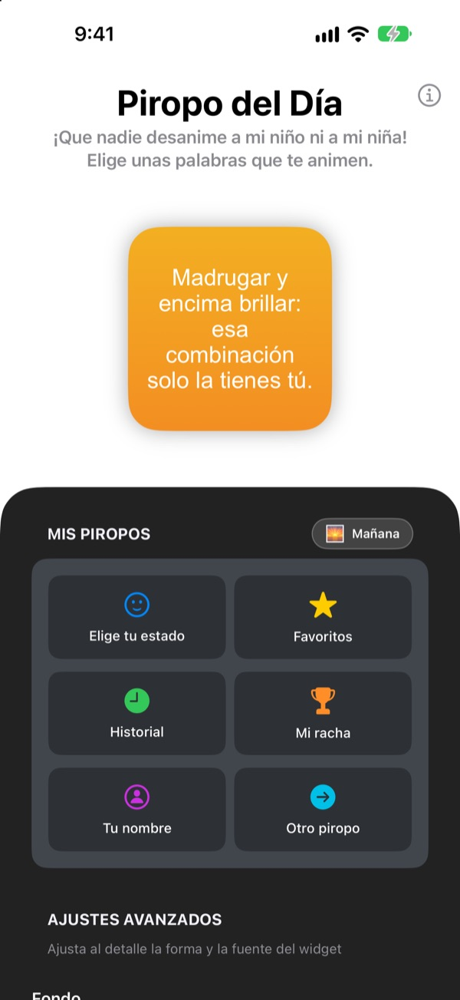
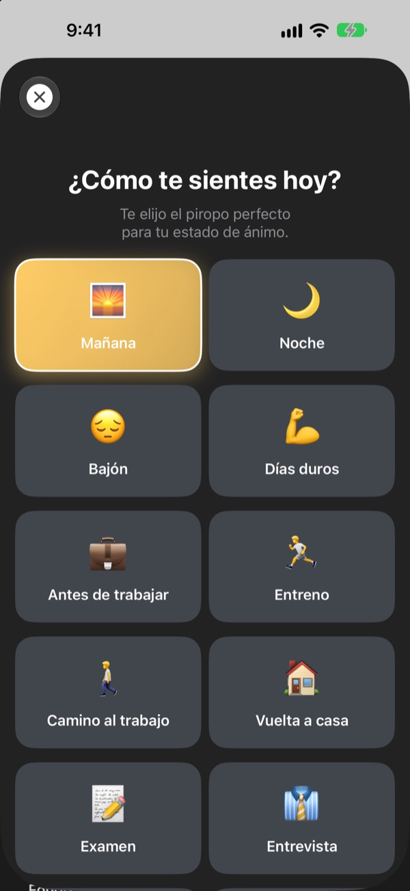
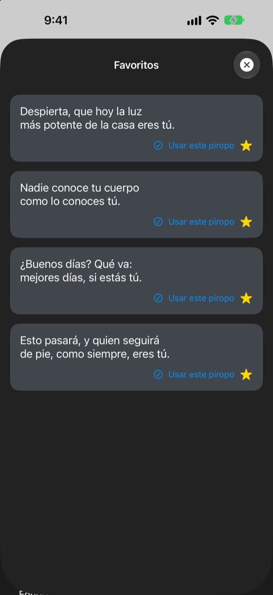
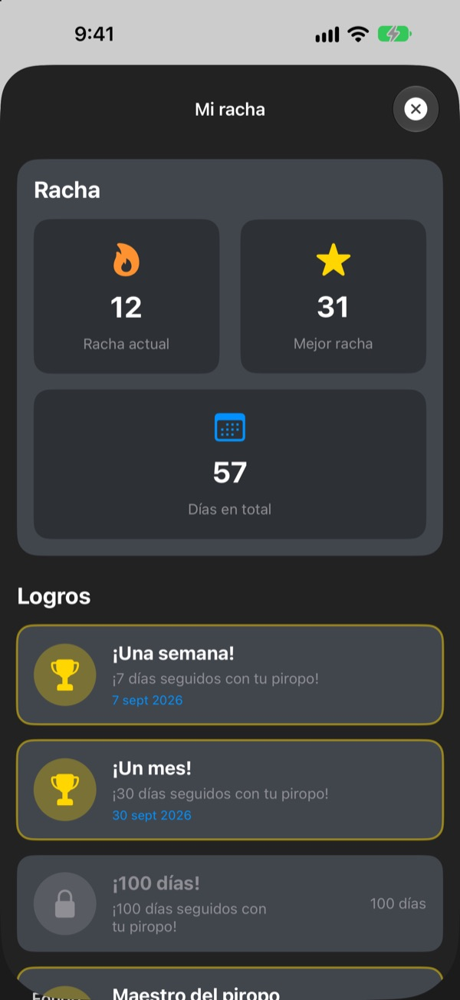

Cada vez que miras el móvil,
tu fan número uno te espera
Piropo del Día es un widget que te halaga demasiado, y a propósito. Un piropo de mañana por la mañana, uno de entrevista antes de la entrevista. Cámbiale la fuente, los colores y el fondo a tu gusto.
Una sola compra y lo tienes todo. Sin suscripción ni anuncios.

Llévate un piropo ahora
Elige un estado y el widget te muestra un piropo para él. Toca Otro piropo y sale uno al azar de los 281.
¿Quién es tu crítico más duro? ¿Tú?
Camino al trabajo, antes de la entrevista, de vuelta a casa, la voz de tu cabeza no para de echarte la bronca. Piropo del Día se pone de tu lado desde la pantalla de inicio varias veces al día, un pelín más de la cuenta. En cuanto se te escapa una sonrisa, vuelve un poco de confianza.
Un piropo para cada momento
Elige entre 14 estados y situaciones como Mañana, Camino al trabajo, Días duros, Entrevista o Antes de la cita, y el piropo que encaja aparece en tu widget al momento. ¿No te decides? También está Al azar.

Guarda los que más te gusten
Toca la estrella para guardarlo en Favoritos y repasa los anteriores en el Historial. Toca Usar este piropo y pasa directo a tu widget.

Entra cada día y suma
Cada día que lo miras alarga tu racha. Al llegar a 7, 30 o 100 días seguidos, o a 50 y 100 días en total, desbloqueas un logro.

Empieza en tres pasos
- 1
Elige tu estado
Abre
Elige tu estadoy toca el que encaje ahora. - 2
Personaliza el widget
En Ajustes avanzados elige fuente, color del texto, fondo y frecuencia.
- 3
Ponlo en tu pantalla de inicio
Mantén pulsada la pantalla de inicio, toca + y busca Piropo del Día.
Así puedes dejar el widget
- Fuente
- 13 opciones, entre ellas Futura, Georgia y Marker Felt
- Color del texto
- El que más te guste
- Fondo
- Un degradado de dos colores o una de las fotos incluidas
- Alineación
- Izquierda, centro o derecha
- Interlineado
- Líneas más juntas o más separadas
- Frecuencia de actualización
- Un piropo nuevo cada 5, 15 o 30 minutos
El tamaño del widget lo eliges al añadirlo a la pantalla de inicio.
Lo compras una vez y listo
La app
- 281 piropos para 14 estados
- Un widget de pantalla de inicio a tu estilo
- Favoritos e Historial
- Rachas y logros
Apoya al desarrollador
- Elige una propina pequeña, mediana o grande
- No desbloquea nada. Es solo una forma de dar las gracias
Solo si te apetece y cuando te apetezca.
Sin suscripción, sin compras extra y sin anuncios.
Preguntas frecuentes
¿Cómo añado el widget?
Mantén pulsado un hueco libre de la pantalla de inicio hasta que los iconos se muevan, toca + arriba, busca Piropo del Día y elige un tamaño.
¿Cómo se elige el siguiente piropo?
Al elegir un estado, un piropo para ese estado aparece al momento en tu widget. Después, el widget muestra uno al azar de los 281 con la frecuencia que elegiste. También puedes tocar Otro piropo en la app para pasar al siguiente.
¿Puedo cambiar la fuente o la frecuencia del widget?
Sí. En Ajustes avanzados cambias la fuente, el color del texto, el fondo, la alineación, el interlineado y la frecuencia de actualización, que puede ser de 5, 15 o 30 minutos.
El widget no ha cambiado enseguida.
iOS decide cuándo se redibujan los widgets, así que a veces va un poco por detrás de la frecuencia elegida. Abre la app y ciérrala, y el widget se actualiza.
¿Cómo funciona la racha?
Cada día seguido que miras un piropo suma uno a tu racha. En Mi racha ves la racha actual, tu mejor marca, los días totales y tus logros.
Han desaparecido mis favoritos y el historial.
Todo se guarda solo en tu dispositivo, así que no se conserva si borras la app o cambias de móvil. Si no la has borrado y aun así ha desaparecido, escríbenos un correo.
¿Se envían mis datos a algún sitio?
No. La app no recoge datos personales. Tus favoritos y tu historial se quedan en tu dispositivo.
¿Cómo aviso de un error o propongo una idea?
Desde Contactar con el desarrollador en la app, por correo o por mensaje directo en Instagram a @lee25_ios. Te respondemos en cuanto lo veamos.
¿Dudas o sugerencias? Escríbenos a leeo@kakao.com.